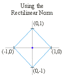
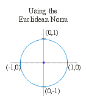
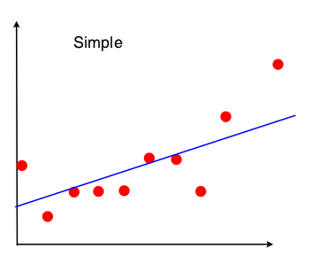
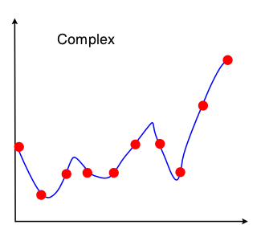

Introduction to Regularization
CS 600.475
Created by Eric Bridgeford / @ebridge2
What is a Norm?
Intuition
- Assign a strictly positive length or size to a vector in a vector space
- absolute measurement of position of a point in space
- ex. absolute value is a norm
What do we mean by a norm?
norm $p: \mathbb{R}^n \rightarrow \mathbb{R}$ given: $x, y \in \mathbb{R}^n, a \in \mathbb{R}$- Scalable \[p(\alpha x) = |\alpha| p(x)\]
- Triangle Inequality \[p(x + y) \leq p(x) + p(y)\]
- Norm of Zero implies the vector is zero\[p(x) = 0 \rightarrow x = 0_n\]
$L1$ Norm
- sum of the absolute value of a point's dimensions
- Absolute value: simplest case of $L-1$ norm
- $x \in \mathbb{R}, p(x) = |x|$
- Formal definition: $\left|\left|x\right|\right|_1 = \sum_{i=1}^n |x_i|$
- Note that $x \in \mathbb{R}^n$, so $i$ is just iterating over the dimensions of $x$
Unit Ball
- visualizing norms in $2D$ can give us insight into what they do
- Unit ball: set of points that would receive a "norm" of 1
- Note that our definition of a "norm" can vary, so every norm has its own unique unit ball
Unit Ball of the $L1$ norm
- here, $x \in \mathbb{R}^2$
- $x_1$ is the vertical axis, $x_2$ is the horizontal axis, $x = \begin{bmatrix}x_1 \\ x_2\end{bmatrix}$
Examples
- $x \in \mathbb{R}^2, x = \begin{bmatrix}3 \\ -4\end{bmatrix}, ||x||_1 = 7$
- $x \in \mathbb{R}^3, x = \begin{bmatrix}5 \\ 2 \\ -4\end{bmatrix}, ||x||_1 = 11$
$L2$ Norm
- root sum of the squares value of a point's dimensions
- euclidian distance: simple intuition of the $L2$ norm
- Formal definition: $\left|\left|x\right|\right|_2 = \sqrt{\sum_{i=1}^n |x_i|^2}$
- Why the absolute value for squaring? $L2$ norms are also defined in complex space
- Need the absolute value to account for complex modulus
Unit Ball of the $L2$ norm
- here, $x \in \mathbb{R}^2$
- $x_1$ is the vertical axis, $x_2$ is the horizontal axis, $x = \begin{bmatrix}x_1 \\ x_2\end{bmatrix}$
Special case of the $2$ norm
- Remember from lin alg: $\langle x, x\rangle = x^Tx = \sum_{i=1}^n x_i^2$
- if $x \in \mathbb{R}^n$, the L2 norm is given by $||x||_2 = \sqrt{\sum_{i=1}^n |x_i|^2}$
- since $|x_i|^2 = x_i^2$ in real space, then we can "cheat":
- $||x||_2 =\sqrt{\langle x, x\rangle}$
- Why? Most languages optimize such that matrix operations are really really fast!
Examples
- $x \in \mathbb{R}^2, x = \begin{bmatrix}3 \\ -4\end{bmatrix}, ||x||_2 = \sqrt{3^2 + 4^2} = 5$
- $x \in \mathbb{R}^3, x = \begin{bmatrix}5 \\ 2 \\ -4\end{bmatrix}, ||x||_2 = \sqrt{5^2 + 2^2 + 4^2} = \sqrt{45}$
$p-$ Norm
- Generalizes us to more complex normalizations
- if $x \in \mathbb{R}^n$, $||x||_p = \left(\sum_{i=1}^n |x_i|^p\right)^\frac{1}{p}$
Unit Balls

Coding with Vectors
- Best part about python: open source packages
- Key packages: Numpy, Scipy, Sklearn
Bias/Variance Tradeoff
- every machine learning algorithm is going to either be too general, or not general enough
- We have a fine line deciding between overfitting and underfitting the data
Hypothesis Class
- Every machine learning algorithm is really just a hypothesis class restriction
- different "algorithms" = different way of interacting with the data
- the selection of models/parameters defines your hypothesis class
- Ie, hypothesis class of all linear functions with real coefficients
Bias
- Underfitting
- simple hypothesis class
- might only look at a small number of features
- Might only look at a subset of the coefficients a model could take
- Extreme: model outputs same value on every input
High Bias
- note that noise is reduced
- We might get a "close" prediction, but miss out on the actual dynamics of the system because of our simplicity
Variance
- Overfitting
- Radical shifts to small changes in the data
- Including or excluding as few as one or two points completely changes our parameters
- LOW generalizability
High Variance
- note that we fit every data point perfectly
- If we were to test a new point, we would have no clue what to do with it
Tradeoff
- Bias can be good: distribute noise over the dataset
- If we have a model with bias, it can ignore those one or two outliers better
- Variance can be good: many real world systems are complex
- Sometimes it takes a high dimensional answer to analyze even the simplest of problems
Regularization
- One solution to the bias/variance tradeoff
- Given a model, regularization lets us determine the simplicity/complexity of the coefficients we want to keep
- "Penalize" our data for overfitting in our minimization problem
Regularization
- Given: data $X=\left\{x_i\right\}_{i=1}^N, Y=\left\{y_i\right\}_{i=1}^N$, $x_i \in \mathbb{R}^d$
- Loss function: $L(\theta | X, Y) : \theta_i \in \theta$ is a single parameter
- Original problem: $\hat{\theta} = \textrm{argmin}_{\theta} L(\theta|X, Y)$
- Regularized Problem: $\hat{\theta} = \textrm{argmin}_{\theta}\left[ L(\theta|X, Y) + \lambda f(\theta)\right]$
Penalization
$\hat{\theta} = \textrm{argmin}_{\theta}\left[ L(\theta|X, Y) + \lambda f(\theta)\right]$- $f(\theta)$: function to penalize our parameters $\theta_i \in \theta$
- example: we want coefficients to be generally small, so make $f(\theta)$ return a big value when $\theta_i$s are large
- $\lambda$: bigger lambda gives us more regularization
L1 "Lasso" Regularization
$\hat{\theta} = \textrm{argmin}_{\theta}\left[ L(\theta|X, Y) + \lambda ||\theta||_1\right]$- Uses the L1 norm to regularize
- one of the best norms: parameter selection
- as long as our loss is convex, likely to hit our parameter set at an "edge"
- downside: doesn't add extra penalty when values are super large
L2 "Ridge" Regularization
$\hat{\theta} = \textrm{argmin}_{\theta}\left[ L(\theta|X, Y) + \frac{\lambda}{2} ||\theta||_2^2\right]$- Uses the L2 norm to regularize
- Also, a good norm
- Penalizes larger values much more than it penalizes smaller values: squared
- susceptible to bias: keeps a lot of low weight parameters
Comparing Regularization Methods